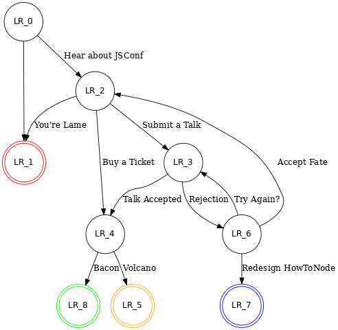

Volcano Wheat
HEADS UP! This article was written for an older version of node. More up-to-date information may be available elsewhere.
Announcing the release of a new engine for howtonode.org, Wheat! Also in honor of those stuck in Europe trying to get to jsconf, the background is a photo of the icelandic volcano.
Volcano

German air traffic control says Munich airport is being closed - completing a shutdown of the country's international airports due to drifting ash from an Icelandic volcano.
Munich's planned closure at 8 p.m. Friday came hours after that of the other 15 international airports, including Frankfurt. Flights were halted in northern cities including Berlin and Hamburg Thursday night. (AP)
This means that several people who were attending JSConf had their flights canceled.
Wheat
As you may have noticed, the site looks completely different. It works completely different under the hood as well. Instead of pre-generating static html using node-blog, it runs on a node-powered web server using wheat. The actual files don't exist anywhere in the file-system. Wheat instead implements a mini virtual filesystem that can read local bare git repositories and serve files from them git the "git show" command.
Thanks to some tips from the github guys I was able to implement a caching system that is very efficient and responsive. In synthetic benchmarks, most pages render at a rate around 2000 requests/second using a pure node server.
When authoring an article, you can run wheat locally on your machine, and it will overlay the local files in your working tree on top of the files in the git repo. So testing an article is as simple as saving the markdown file and hitting refresh in the browser.
Once an article is ready, you only have to push to your git repo on your server and the head cache will pick up the changes within 100ms. In my setup I have a git post-update hook that re-pushes the changes to GitHub so that the contents are more accessible to the community.
// Print something to the console
console.log("Arrrg, There be ash over tharr!");As you can see, it supports pulling in external code snippets and running them in a node sandbox. This will help keep syntax errors and code samples that are just plain wrong at bay.

Also graphviz graphs are now rendered on the fly. Like this graph that explains the possible ways to end up or not end up at JSConf 2010.
View the discussion thread.blog comments powered byDisqus